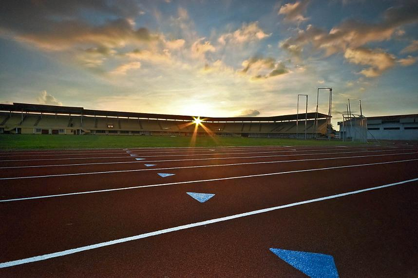
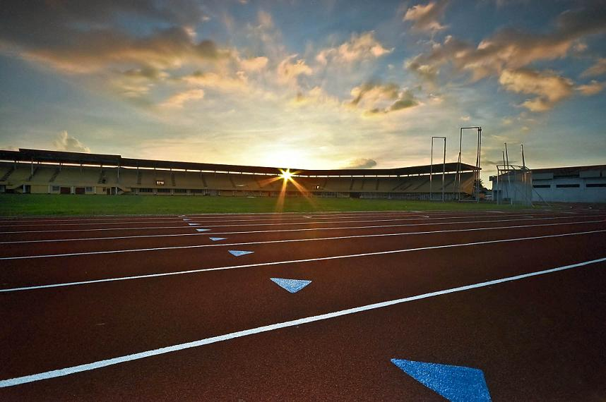

Narciso Ramos Sports and Civic Center

The Narciso Ramos Sports and Civic Center (NRSCC) , also known as the Narciso Ramos Sports Complex, is a complex of sports facilities in Lingayen, Pangasinan.
The main stadium of the Narciso Ramos Sports and Civic Center has a grandstand which can seat a maximum of 16,000 people as well as a rubberized athletics track oval. It also host a 2,500 capacity gymnasium, outdoor courts, bowling alley, a second sports gym. Dormitories are also present within the complex which has a total capacity of 698 beds. A restaurant and a lagoon is also hosted. The sports complex covers an area of around 3.5 ha (8.6 acres).
The site also has a 25 m (82 ft) swimming pool which was last rehabilitated in 2015. A laundry or linen building, and a mess hall was also inaugurated within the same year.
The NRSCC has hosted the Palarong Pambansa, the national student's multi-sport games, in two occasions; in 1995 and 2012. It has also held other national competitions such as the Philippine National Open for athletics in 2009 and the National Milo Olympics in 2011. The 2013 Region I Athletics Association (R1AA) meet, a regional competition in the Ilocos Region was also held in the NRSCC.
Athletes from the province are trained at the NRSCC by the provincial government of Pangasinan. The Pangasinan Sports Academy uses the facilities of the NRSCC. The venue was also designated as a training venue for Filipino track and field athletes who would be competing at the 2019 Southeast Asian Games.

 
